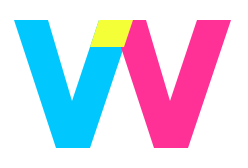
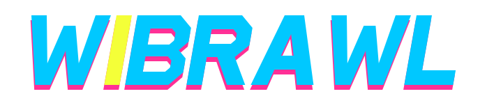

01 / NEON FOLD
Download SVG

Recommended · a folded W + custom lettering

Icon + header sizeThree vector directions. One cyberpunk palette.

Recommended · a folded W + custom lettering

Icon + header size
Wordmark first · blue lettering, pink echo, yellow I

Compact WB monogram · stacked lettering